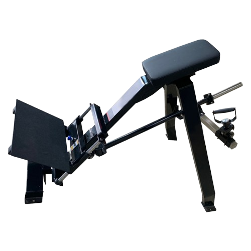
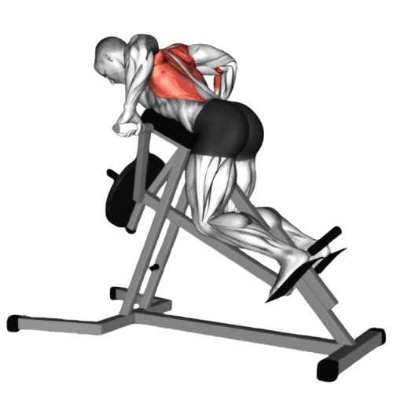
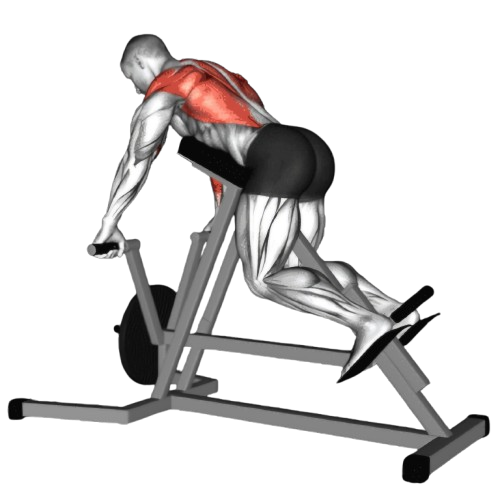

티 바 로우

- 양손으로 핸들을 어깨 너비보다 약간 넓게 잡는다.
- 등 근육을 사용해 바를 위로 당기면서 팔꿈치가 몸 뒤쪽으로 움직이도록 한다. 바가 몸 가까이 오고 팔꿈치가 몸 옆으로 지나가야 한다.
- 바를 당긴 상태에서 1~2초간 정지하며, 등 근육을 최대한 수축한다.
- 이때 호흡은 뱉는다.
- 천천히 바를 아래로 내리면서 준비 자세로 돌아온다. 이때 중량이 떨어지지 않도록 천천히 컨트롤한다.
- 이때 호흡은 마신다.

주의사항
- 팔꿈치가 바깥으로 벌어지거나 허리가 과도하게 구부러지지 않도록 신경 써야 한다. 운동 중 어깨를 내리고 등을 활용하여 당기는 것이 중요하다.
- 지나치게 무거운 중량은 잘못된 자세를 유발할 수 있어 부상의 원인이 된다.
운동부위 및 효과
- 광배근, 승모근, 능현근, 대원근, 이두근, 전완근, 후면 삼각근
- 라잉 티 바 로우는 등 전체를 두껍고 넓게 만드는 데 도움을 준다. 특히 중간 및 하부 등 근육을 발달시키는 데 효과적이다.